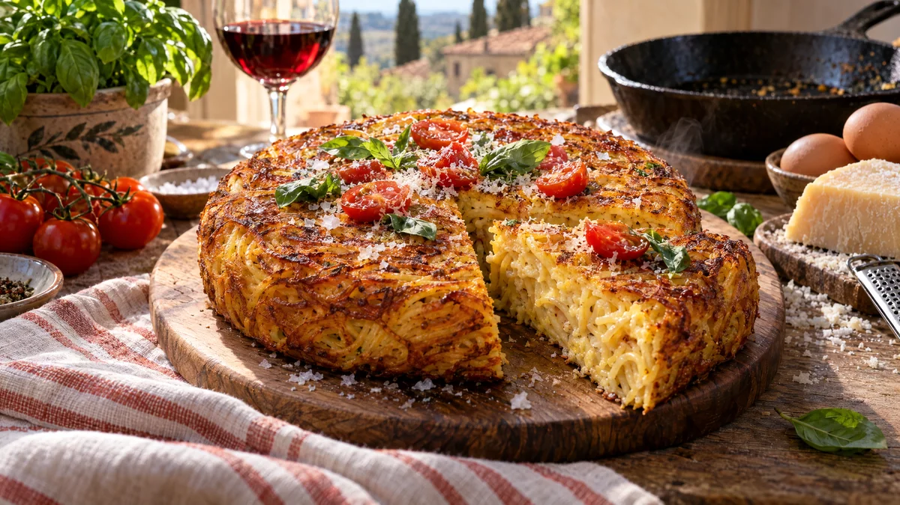

RESTFEST · RECEPTHuvudrätt
Krispig pastafrittata på gårdagens spagetti
Gårdagens spagetti, fem ägg och en bit lagrad ost. Pastan vänds i ägg och ost och steks tills den bildar en gyllene, krispig kaka med ett mönster av knapriga pastasträngar, mjuk och krämig i mitten. Den skärs i tårtbitar och toppas med tomater och basilika. Neapels bästa sätt att ta hand om överbliven pasta.
- Förberedelse
- 10 min
- Tillagning
- 20 min
- Portioner
- 4
- Nivå
- Nybörjare
 Det här behöver du
Det här behöver du
JÄMFÖRT MED DIN KYL
Tryck på + vid det du behöver köpa.
Frittata
Topping
Gör så här
- Sätt ugnen på 200 grader.
- Vispa ihop ägg, ost, mjölk, salt, peppar och persilja i en stor skål. Lägg i pastan och vänd tills varje sträng är täckt. Klipp pastan några gånger med en sax om den är lång och tovig.
- Hetta upp olja och smör i en ugnsfast stekpanna, ca 24 cm, på medelvärme. Häll i pastan, fördela den jämnt och tryck till ytan med en slickepott.
- Stek utan att röra i 6–8 minuter, tills kanterna har stelnat och undersidan är gyllene och krispig. Lyft försiktigt i kanten med slickepotten och kika.
- Ställ in pannan i mitten av ugnen i 8–10 minuter, tills ytan har stelnat och fått färg. Har du ingen ugnsfast panna, vänd frittatan med hjälp av en stor tallrik och stek andra sidan i 4–5 minuter.
- Dela körsbärstomaterna under tiden och vänd dem i olivolja och salt.
- Låt frittatan vila i pannan i 3 minuter. Lossa kanterna med slickepotten och stjälp upp den på ett skärbräde.
Dekoration och servering
- Vänd frittatan så att den krispigaste sidan hamnar uppåt, då syns det gyllene pastamönstret.
- Toppa med tomaterna, basilika, lite extra riven ost och flingsalt.
- Skär i tårtbitar så att den krämiga insidan syns i snittet.
- God både varm och kall, perfekt i matlådan eller på en picknick.
- Pasta med rester av sås går lika bra, till exempel aglio e olio från recept 28.
Mått och ugnstemperaturer
Måtten är svenska (dl, msk, tsk, krm). Ugnstemperaturerna gäller vanlig ugn med över- och undervärme; med varmluft, sänk med 20 grader.